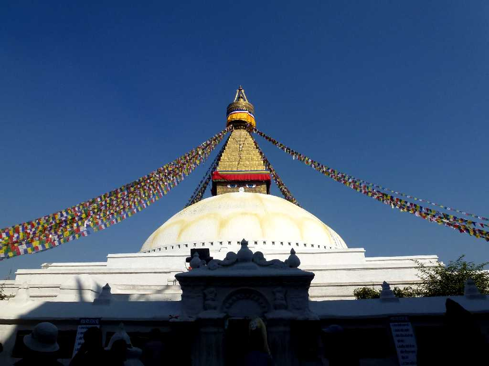
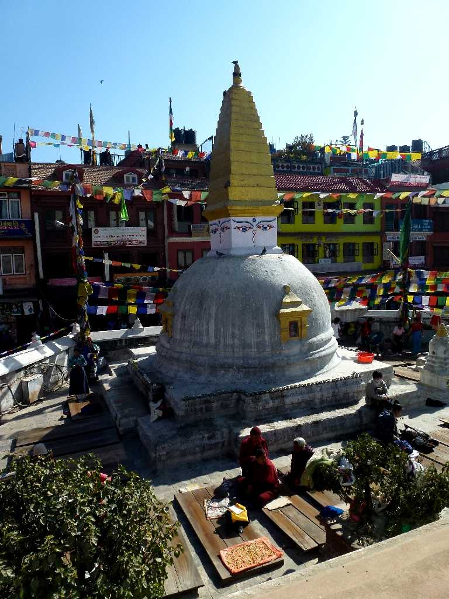
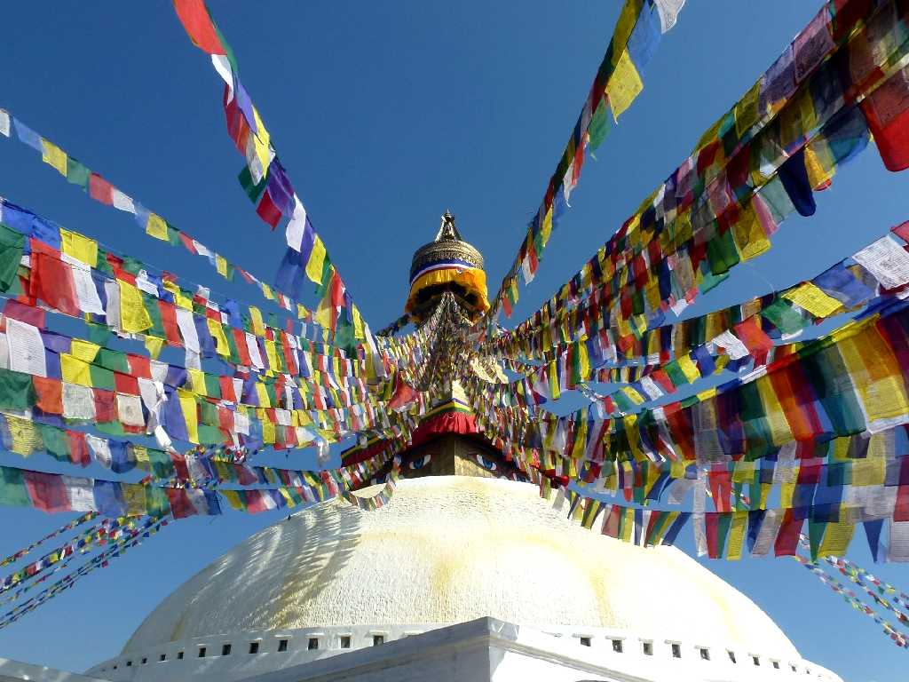
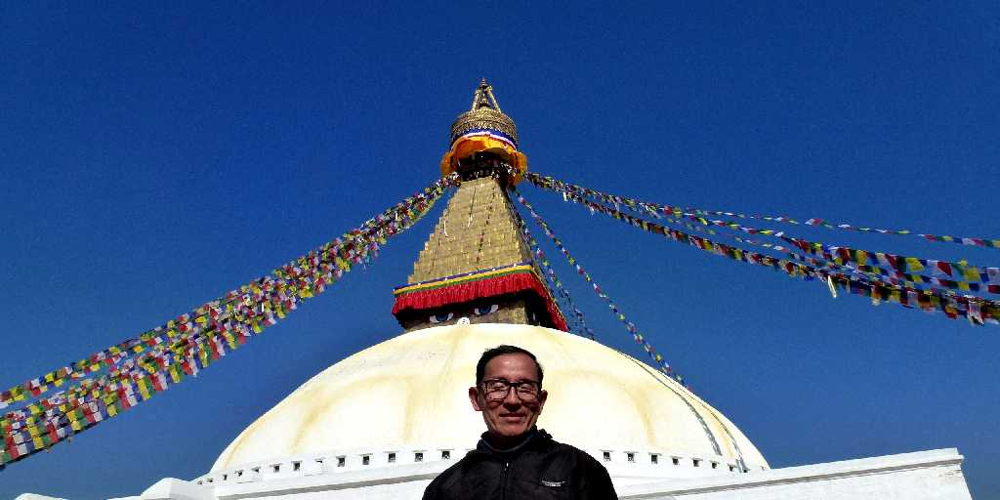
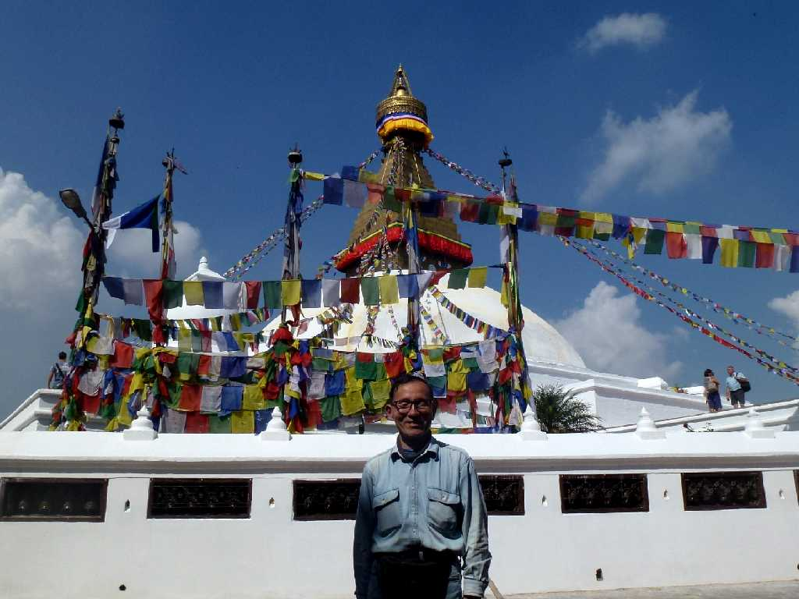

Bouddhanath Kathmandu
ボダナートは５世紀に創られた高さ３６ｍのチベット仏教の仏塔で仏舎利が祀られていると云われ世界のチベット仏教の中心地となっている

Kora Bouddhanath
チベット仏教の最も重要な巡礼地となっている 祀られた仏舎利に五体投地をするところ

Bouddhanath
ボダは仏陀の知恵を意味しナートは寺院を意味し四方を見渡す仏陀の目が描かれている

January 2 2013 Bouddhanath
Bouddhanath
約２年ぶりの再訪問

October 28 2014 Bouddhanath